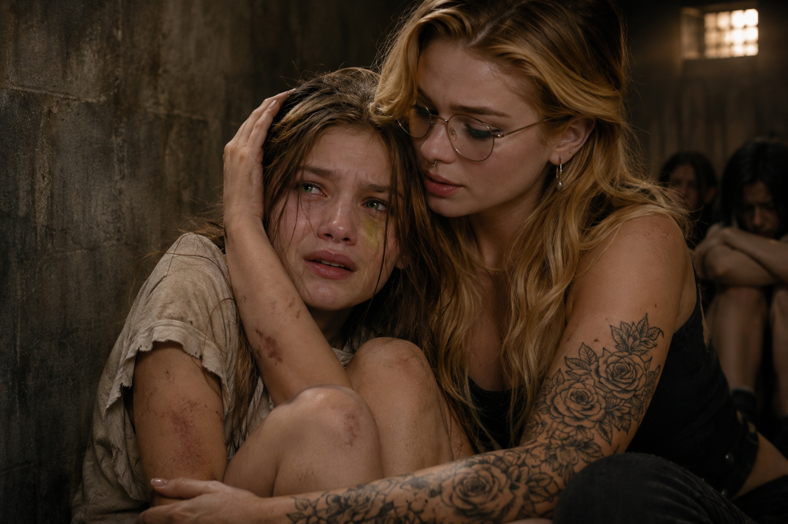
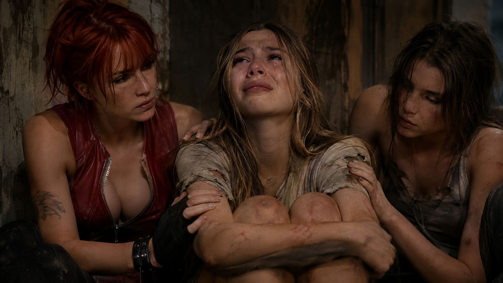
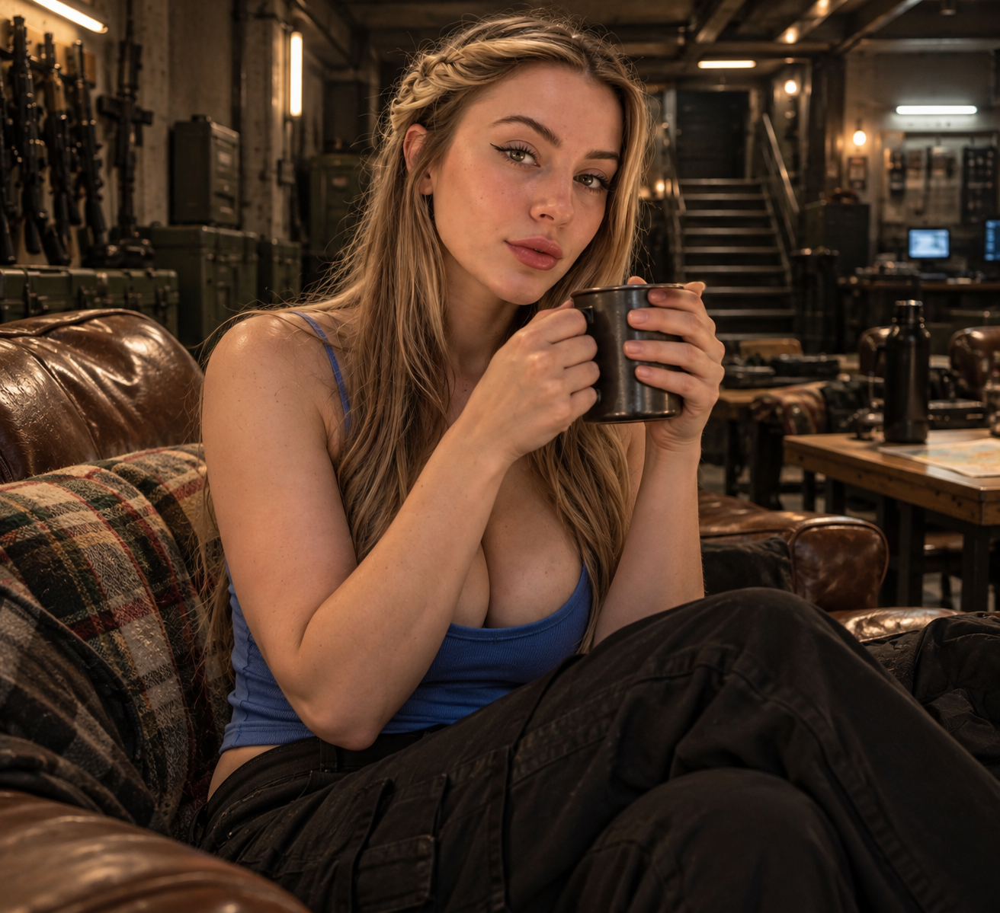
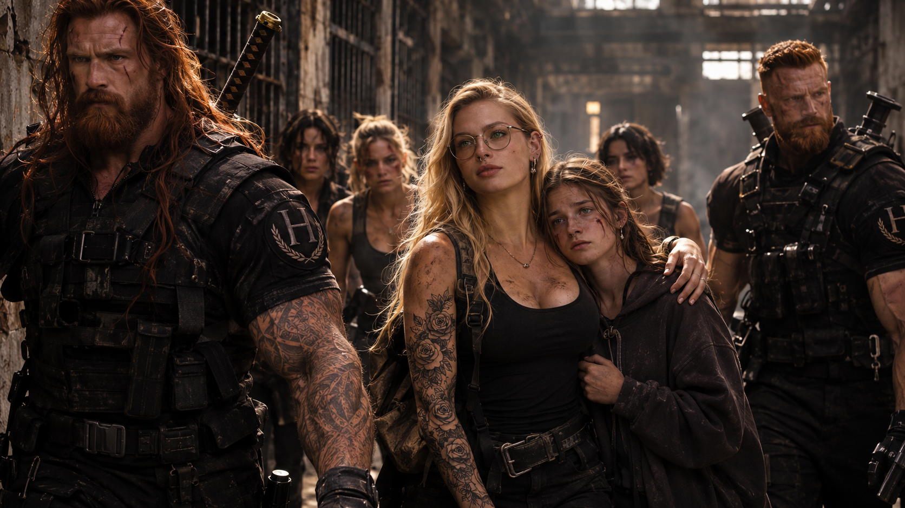
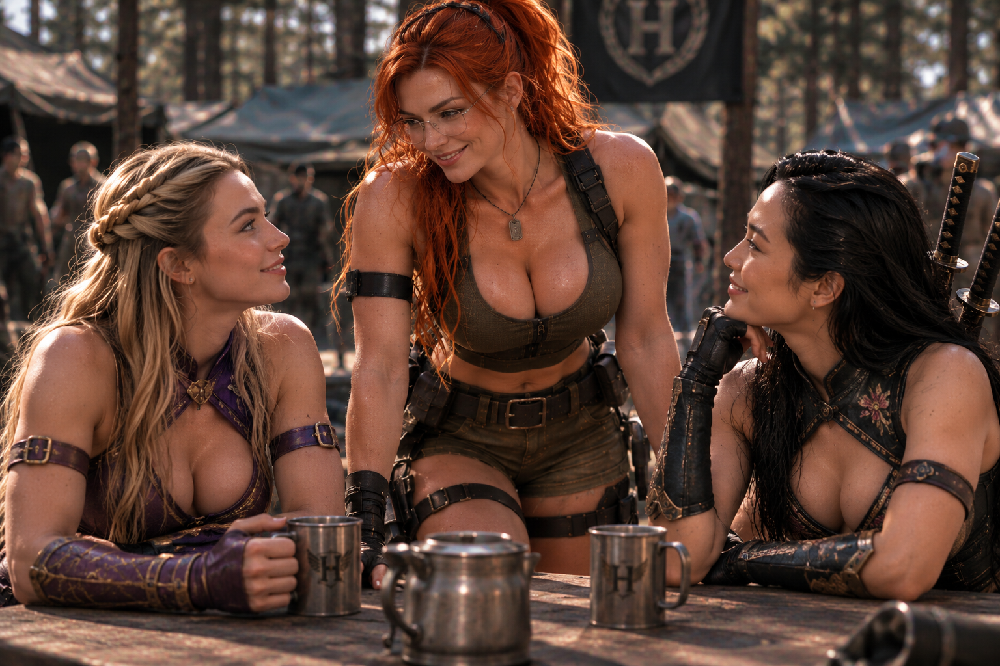
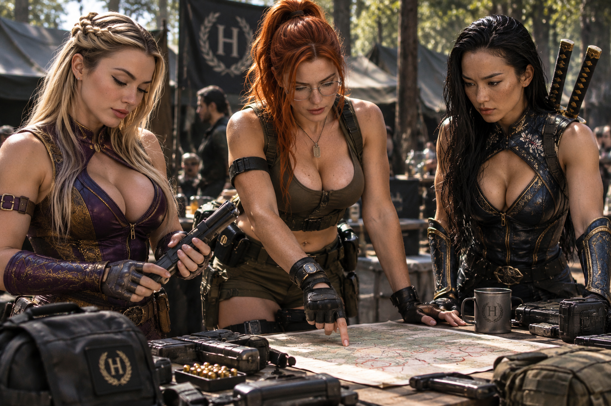

ÁLBUM 01 // 19 REGISTROS Antes do Dia D 
01 // MEMÓRIA ARQUIVO 01 // CATIVEIRO Quando Britney chegou A chegada de Britney mudou o que parecia ser uma espera sem fim. Juntas, elas puderam pedir ajuda. AMPLIAR ↗ 
02 // MEMÓRIA ARQUIVO 02 // ACOLHIMENTO Ninguém precisou soltar sua mão Depois do resgate, o cuidado começou em gestos pequenos: ficar por perto e não exigir palavras. AMPLIAR ↗ 03 // MEMÓRIA ARQUIVO 03 // RETRATO Uma vida voltando ao lugar Entre terapia, estudo e apoio, Hilary começou a recuperar a confiança no próprio futuro. AMPLIAR ↗ 04 // MEMÓRIA ARQUIVO 04 // ESTUDOS DE ENFERMAGEM O primeiro caminho até a enfermaria Antes do Dia D, Hilary já estudava enfermagem. O colapso interrompeu o curso; não o desejo de cuidar. AMPLIAR ↗ 05 // MEMÓRIA ARQUIVO 05 // BRITNEY Amigas para além do resgate O que começou como sobrevivência em comum tornou-se uma amizade escolhida, refeita dia após dia. AMPLIAR ↗ 06 // MEMÓRIA ARQUIVO 06 // MAYA BRADDOCK Uma conversa sem pressa Maya era uma das amigas da escola que faziam parte do mundo de Hilary antes do colapso. AMPLIAR ↗ 07 // MEMÓRIA ARQUIVO 07 // AMIZADE Rir também era um plano Naquele tempo, ainda podiam imaginar o próximo encontro como algo garantido. AMPLIAR ↗ 08 // MEMÓRIA ARQUIVO 08 // LEMBRANÇAS Guardar o que ainda não era passado Fotografias, histórias e tardes comuns viraram parte do que Hilary tentou preservar. AMPLIAR ↗ 09 // MEMÓRIA ARQUIVO 09 // VÉSPERA DO DIA D Quatro amigas, ainda sem despedida Hilary, Maya, Lana e Lisa dividiram uma refeição e planos para depois. Nenhuma sabia que aquela seria uma das últimas vezes em que estariam juntas. AMPLIAR ↗ 10 // MEMÓRIA ARQUIVO 10 // CÍRCULO DE AMIGAS O retrato que ficou Lisa e Maya aparecem com Hilary em uma lembrança de um mundo que parecia continuar. AMPLIAR ↗ 11 // MEMÓRIA HA-09.01 // POSTO H Um lugar para tratar e respirar AMPLIAR ↗ 12 // MEMÓRIA HA-09.02 // BUNKER O intervalo entre chamados AMPLIAR ↗ 
13 // MEMÓRIA HA-09.03 // REGISTRO DE CAMPO Antes de voltar para a enfermaria AMPLIAR ↗ 
14 // MEMÓRIA HA-09.04 // RESGATE Chegar até quem ficou para trás AMPLIAR ↗ 15 // MEMÓRIA HA-09.05 // SILÊNCIO Quando não é preciso dizer nada AMPLIAR ↗ 16 // MEMÓRIA HA-09.06 // PAUSA Um minuto para respirar AMPLIAR ↗ 17 // MEMÓRIA HA-09.07 // ENTRE TURNOS O peso de um dia longo AMPLIAR ↗ 
18 // MEMÓRIA HA-09.08 // NAOMI E ALICE Uma pausa compartilhada AMPLIAR ↗ 
19 // MEMÓRIA HA-09.09 // PREPARAÇÃO Antes da próxima saída AMPLIAR ↗